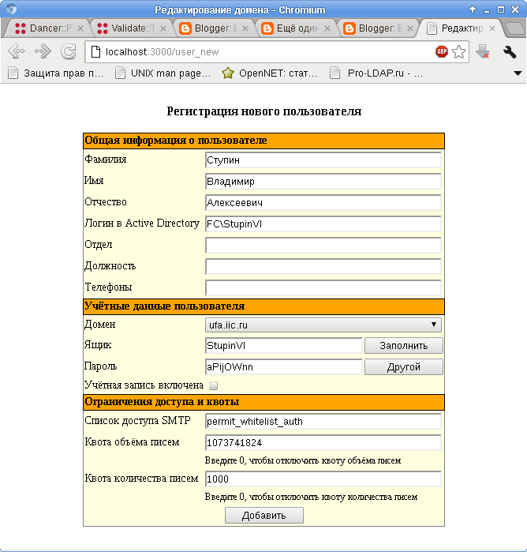

При написании веб-приложений обычно используется база данных. Безусловно, для подключения к базе данных можно воспользоваться обычным для Perl модулем DBI. Однако в Perl-фреймворке Dancer для этих целей есть удобная обёртка - плагин Database.
Поставим соответствующий модуль:
# apt-get install libdancer-plugin-database-perl
Перейдём в каталог с нашим Dancer-приложением, откроем файл конфигурации config.yml и впишем туда настройки подключения к базе данных:
plugins:
Database:
driver: "mysql"
database: "db"
host: "localhost"
port: 3306
username: "user"
password: "password"
connection_check_threshold: 10
on_connect_do: "SET CHARACTER SET 'UTF8'"
Настройка connection_check_threshold задаёт частоту проверки доступности подключения к базе данных. Если последняя проверка доступности подключения проводилась более 10 секунда назад, то проводится новая проверка. Если было обнаружено, что подключение к базе данных пропало, оно будет переустановлено.
Сразу после подключения к базе данных выполнится команда (или несколько команд), указанная в настройке on_connection_do.
Плагин позволяет указать объект, который будет обрабатывать запросы к базе данных вместо используемого по умолчанию DBI::db. Можно определить несколько подключений к базе данных или назначить обработчики ошибок. В плагине определено несколько методов, позволяющих в простейших случаях обходиться без написания SQL-запросов.
Для использования плагина в основной модуль нашего веб-приложения lib/test.pm нужно прописать строчку подключения модуля:
use Dancer::Plugin::Database;
Теперь для выполнения запросов к базе данных можно использовать методы, обычные для модуля DBI:
my $sth = database->prepare("SELECT COUNT(*) FROM users");
Более подробно о плагине написано в его документации:
$ perldoc Dancer::Plugin::Database
Напоследок приведу картинку, не иллюстрирующую ничего из сказанного, однако сформированную с использованием описанного плагина и рассмотренного ранее модуля Dancer::Template::HtmlTemplate:
